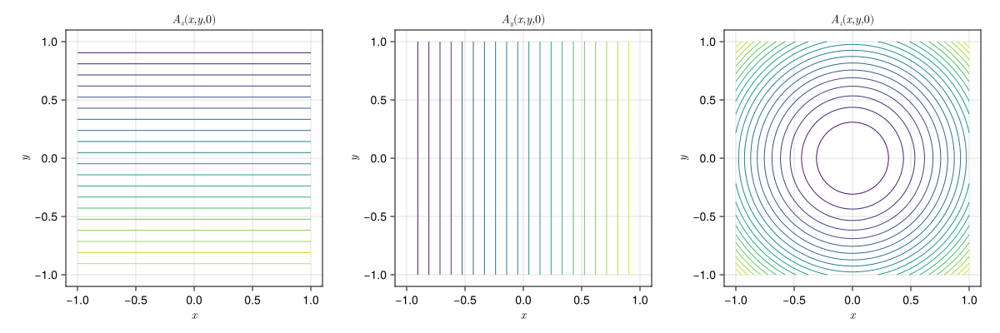

Quadratic Potentials
ElectromagneticFields.QuadraticPotentials — Module
Electromagnetic field with quadratic potentials in (x,y,z) coordinates Based on Xinjie Li, Ruili Zhang, and Jian Liu, Symplectic Runge-Kutta methods for the guiding center dynamics.
The covariant components of the vector potential are given by
\[A (x,y,z) = \bigg( -50y , \, 50x , \, \frac{x^2 + y^2}{2} \bigg)^T ,\]
resulting in the magnetic field with covariant components
\[B (x,y,z) = \big( y, \, -x, \, 100 \big)^T ,\]
and electrostatic potential
\[\phi (x,y,z) = \frac{1}{2} \big( x^2 + y^2 + z^2 \big) .\]
Constructing the Field
using CairoMakie
using ElectromagneticFields
equ = QuadraticPotentials.init()Electromagnetic field with quadratic potentials in (x,y,z) coordinatesPlotting
The three components of the vector potential in the plane $z = 0$. The first two are linear in the coordinates, the third is quadratic:
plot_equilibrium(equ)
Evaluating the Field
This is one of the few fields that carries an electrostatic potential as well as a magnetic one, so the generated code includes φ and the components of the electric field:
QuadraticPotentials.@code()t = 0.0
x = [0.5, 0.3, 0.2]
φ(t, x), [E₁(t, x), E₂(t, x), E₃(t, x)](0.19, [-0.5, -0.3, -0.2])